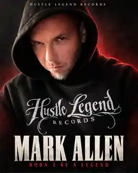

MARK ALLEN
South Jersey-born / Breese, Illinois-based. After five years away from releasing music, Mark Allen returned with the autobiographical, 20-track Born 2 Be A Legend (April 5, 2026) and an independent label built around creative ownership.

Spotify for Artists artist-level worldwide figures, Oct. 9, 2025 to Oct. 8, 2026; streams and listeners rounded. Not an album all-time total.
About the album
Born 2 Be A Legend is a lyrical hip-hop project navigating survival, fatherhood, loyalty, conflict, humor and ambition. The opening track, “5 Years Later…,” frames Allen's return; “Karma” and “Rare Breed” carry the story forward.
Featured tracks
“5 Years Later…” • “Karma” • “Rare Breed”
Listen / Artist
External coverage
EDM Nations: Independent feature, “Mark Allen Challenges the Status Quo with Gritty New Underground Anthem ‘Rare Breed’.” Read feature.
USA News (Oct. 3, 2026): “From Home Studio to Hustle Legend Records.” Published contributor/branded feature, not independent editorial. Read feature.
October 2026 syndicated release: ABNewswire (Oct. 13); NEWSnet Louisville (Oct. 14); Fresno TV 112 (Oct. 12). Organization-supplied press-release distribution, not independent reporting or TV airtime.
Coverage angles
Five-year comeback • 20-song connected narrative • From home studio to artist-owned label • Independent music ownership.
Hustle Legend Records team
Mark Allen — Founder / CEO; Grace Davis — Chairman; DJ Nick Nasty — A&R; Danielle “Barb!3” Hein — Image / Radio; Samuel DeRiggi (Torown) — Artist Relations; John Schwartz (SCHWRTZMA8D) — Producer / Beat Store Manager; Lawrence Green (Ty) — INVERTED TIME Podcast.